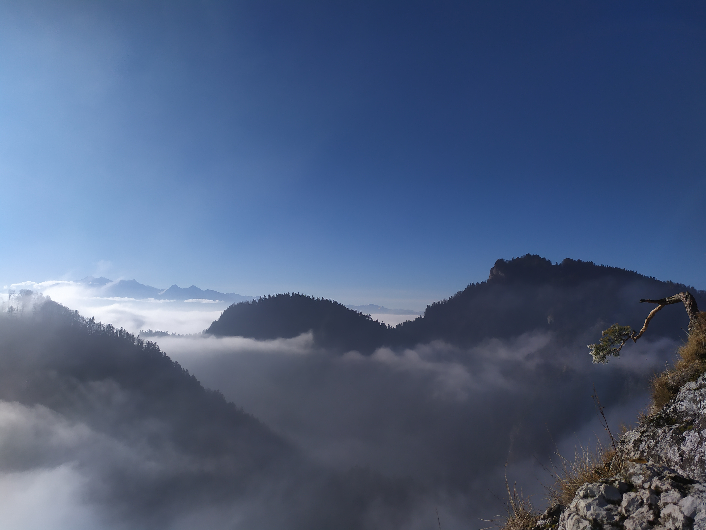
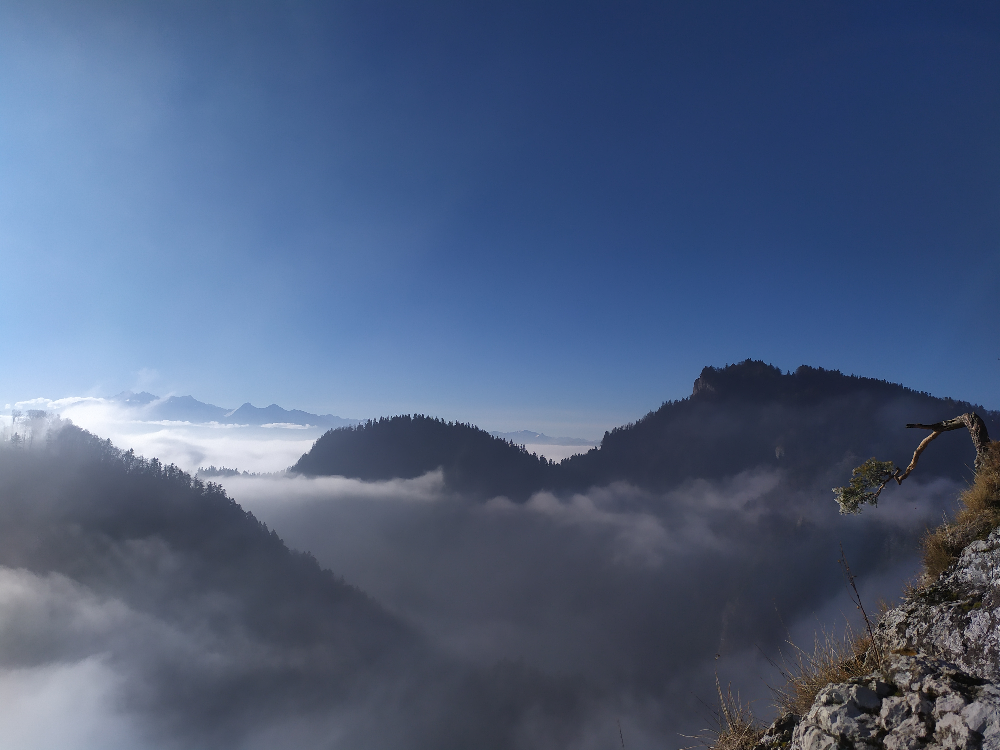
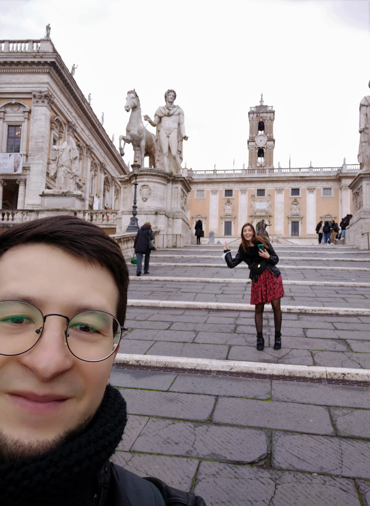
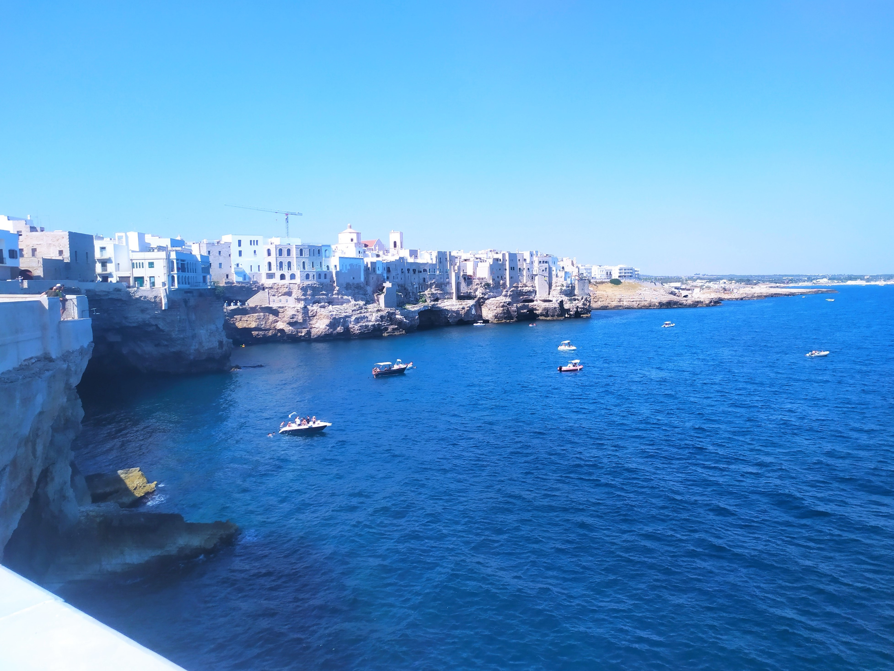
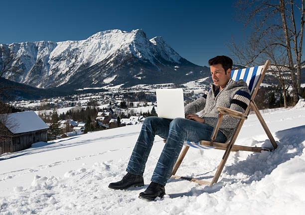

O mnie
Cześć, nazywam się Adam.
Zapraszam Was do obejrzenia mojej pierwszej strony internetowej.
Zobaczycie w niej moją Pasję-
Wspinaczkę, którą uprawiam w Skałach i na ściankach wspinaczkowych.
Pokaże Wam moje podróze: bliższe i dalsze.
Na końcu krótko opisze moją aktualną pracę oraz moje plany na przyszłość.
Mam nadzieję, że się Wam spodoba :)

Wspinaczka
Outdoor
Wspinaczka skałkowa jest moją ulubioną formą wspinaczki oraz formą
spędzania wolnego czasu.
Z uwagi na to, że mieszkam w Krakowie dojazd do ciekawych rejonów wspinaczkowych zajmuje około 30min
autem.
Dla osób nie znających Krakowa może być ciekawe, że takie rejony znajdują się również na
terenie miasta
bardzo blisko centrum (Zakrzówek, Kamieniołom Liban).
Znajdź mnie na zdjęciach!!
Niestety, jest pewien minus tej aktywności- pogoda.
Dlatego przez większą część roku wspinam się na sztucznych ściankach, a o tym poniżej :)
Indoor
Ścianki wspinaczkowe zysykują na popularności i jest ich coraz wiecej
w Krakowie.
Wymienię tutaj tylko trzy, które powstały w przeciągu ostatnich trzech lat.
Moim zdaniem jest się czym chwalić, bo są na bardzo wysokim poziomie.
Podróże
Bliższe
Do bliższych podróży zaliczam jednodniowe wyjazdy po okolicznych
terenach.
Moje ulubione:
- Tatry
- Gorce
- Pieniny
 

Dalsze
Mój ulubiony kierunek podróży to Włochy- jest w nich coś magicznego :)
| Region | Miasta | Data | Rok |
|---|---|---|---|
| Apulia | Bari | 15 sierpień | 2021 |
| Ostuni | 16 sierpnia | ||
| Monopoli | |||
| Polignamo a Mare | 17 Sierpnia | ||
| Giovinazzo | |||
| Lacjum | Rzym | 11-16 listopad | |
| Sycylia | Katania | 16 Maj | 2022 |
| Taormina | 17 Maj | ||
| Etna | 18 Maj | ||
| Syrakuzy | 19 Maj |
 
Polecam te miejsca jak i całe Włochy.
Praca
Aktualnie
Prowadzę własną działalność w branży Medycznej czyli jestem szefem i
głównym pracownikiem.
Zajmuję się wszystkim, co związane z moją firmą:
zaczynając od kontaktu z klientami, terminowym wykonywaniem zleceń, dbaniem o jakość
wyrobów,
kontaktem z dostawcami, ulepszaniem procesu produkcji, wprowadzaniem innowacji...
i jeszcze wieloma innymi sprawami.
Oczywiście to wszystko w nienormowanym czasie pracy.
W przyszłości
Chciałbym się przebranżowić i zacząć prace w IT - to jest mój aktualny
cel.
Uważam, że jest to praca bardzo kreatywna i dająca wiele możliwości rozwoju.
Na razie robię ten kurs, ale myślę, że po jego zakończeniu będę chciał jeszcze rozwinąć
swoją
wiedzę...
Mam nadzieję, że właśnie tak będzie wyglądała moja praca w przyszłości- Trzymajcie za mnie kciuki!!!
